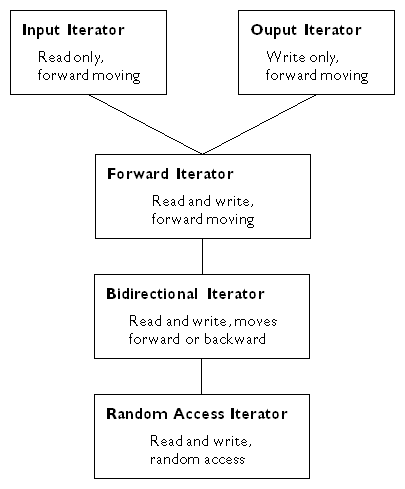

Library: Iterators
Pointer generalizations for traversal and modification of collections
Iterators are a generalization of pointers that allow a C++ program to uniformly interact with different data structures. The illustration below displays the five iterator categories defined by the standard library, and shows their hierarchical relationship. Because standard library iterator categories are hierarchical, each category includes all the requirements of the categories above it.

Because iterators are used to traverse and access containers, the nature of the container determines the type of iterator it generates. Also, because algorithms require specific iterator types as arguments, it is iterators that, for the most part, determine which standard library algorithms can be used with which standard library containers.
To conform to the C++ standard, all container and sequence classes must include their own iterator types. Each iterator may be a class defined within the container or may be a simple pointer, whichever is appropriate.
Containers and sequences must also include const iterators that point to the beginning and end of their collections. These may be accessed using the class members, begin() and end().
Because the semantics of iterators are a generalization of the semantics of C++ pointers, every function template that takes iterators also works using C++ pointers to contiguous memory sequences. For example, both of the following uses of the generic algorithm count() are valid:
list<int> 1;
count(1.begin(), 1.end());
int buf[4]={1,2,3,4};
count(buf, buf+4);
Iterators may be constant or mutable depending upon whether the result of the operator*() behaves as a reference or as a reference to a constant. Constant iterators cannot satisfy the requirements of an output_iterator.
Every iterator type guarantees that there is an iterator value that points past the last element of a corresponding container. This value is called the past-the-end value. No guarantee is made that this value is dereferenceable.
Every function included in an iterator is required to be realized in amortized constant time.
The following key pertains to the iterator requirements listed below:
a and b |
values of type X |
n |
value representing a distance between two iterators |
u, Distance, tmp, and m |
identifiers |
r |
value of type X& |
t |
value of type T |
The following expressions must be valid for input iterators:
X u(a) |
copy constructor, u == a |
X u = a |
assignment, u == a |
a == b, a != b |
return value convertible to bool |
*a |
a == b implies *a == *b |
a->m |
equivalent to (*a).m |
++r |
returns X& |
r++ |
return value convertible to const X& |
*r++ |
returns type T |
For input iterators, a == b does not imply that ++a == ++b.
Algorithms using input iterators should be single pass algorithms. They should not pass through the same iterator twice.
The value of type T does not have to be an lvalue.
The following expressions must be valid for output iterators:
X(a) |
copy constructor, a == X(a) |
X u(a) |
copy constructor, u == a |
X u = a |
assignment, u == a |
*a = t |
result is not used |
++r |
returns X& |
r++ |
return value convertible to const X& |
*r++ = t |
result is not used |
The only valid use for the operator* is on the left hand side of the assignment statement.
Algorithms using output iterators should be single pass algorithms. They should not pass through the same iterator twice.
The following expressions must be valid for forward iterators:
X u |
u might have a singular value |
X() |
X() might be singular |
X(a) |
copy constructor, a == X(a) |
X u(a) |
copy constructor, u == a |
X u = a |
assignment, u == a |
a == b, a != b |
return value convertible to bool |
*a |
return value convertible to T& |
a->m |
equivalent to (*a).m |
++r |
returns X& |
r++ |
return value convertible to const X& |
*r++ |
returns T& |
Forward iterators have the condition that a == b implies *a== *b.
There are no restrictions on the number of passes an algorithm may make through the structure.
A bidirectional iterator must meet all the requirements for forward iterators. In addition, the following expressions must be valid:
--r |
returns X& |
r-- |
return value convertible to const X& |
*r-- |
returns T |
A random access iterator must meet all the requirements for bidirectional iterators. In addition, the following expressions must be valid:
r += n |
Semantics of --r or ++r n times depending on the sign of n |
a + n, n + a |
returns type X |
r -= n |
returns X&, behaves as r += -n |
a - n |
returns type X |
b - a |
returns distance |
a[n] |
*(a+n), return value convertible to T |
a < b |
total ordering relation |
a > b |
total ordering relation opposite to < |
a <= b |
!(a > b) |
a >= b |
!(a < b) |
All relational operators return a value convertible to bool.
ISO/IEC 14882:1998 -- International Standard for Information Systems --Programming Language C++, Section 24